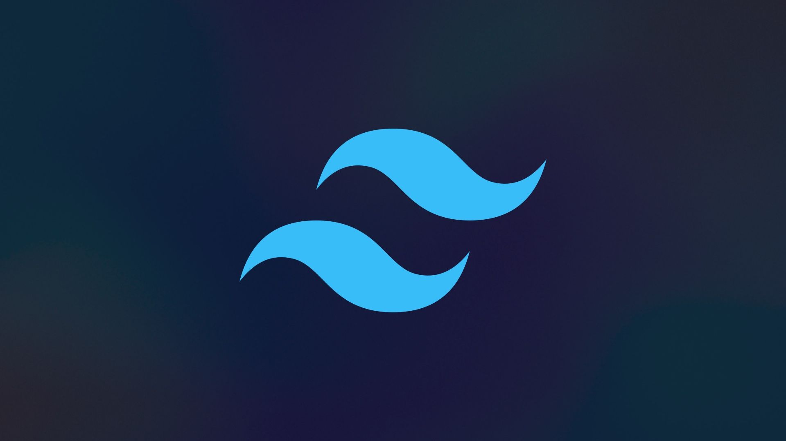

Tailwind
Pelajari Tailwind CSS untuk membuat tampilan website modern dengan cara yang cepat dan fleksibel. Di course ini, kamu akan memahami cara kerja utility-first framework yang memungkinkan kamu mendesain langsung di dalam HTML.
Daftar Materi
-
01Apa itu Tailwind CSS?4 sub-materi
-
02Instalasi & Setup4 sub-materi
-
03Box Model (Padding, Margin, Width, Height)4 sub-materi
-
04Tata Letak Dasar (Display & Position)4 sub-materi
-
05Typography (Font, Ukuran, Warna Teks)4 sub-materi
-
06Warna, Background, dan Efek4 sub-materi
-
07Flexbox Dasar4 sub-materi
-
08Grid Dasar4 sub-materi
-
09Responsive Design4 sub-materi
-
10Interaktivitas & State (Hover, Focus, Active)4 sub-materi
-
11Project: Portfolio Website dengan Tailwind10 sub-materi
Detail Materi
Durasi
~8 Jam
Total Materi
11 Modul
Total Sub-Materi
46 Pelajaran
Tipe
Front-End
Tentang Materi
Course Tailwind CSS ini dirancang untuk membantumu membangun antarmuka web yang responsif dan efisien tanpa harus menulis CSS panjang. Kamu akan belajar konsep utility class, responsive design, hingga teknik kustomisasi tema dan komponen.
Cocok untuk developer yang ingin mempercepat proses styling, menjaga konsistensi desain, dan menghasilkan tampilan website yang bersih serta profesional.
Apa yang akan kamu kuasai?
- Memahami konsep dasar dan filosofi utility-first pada Tailwind CSS.
- Menyiapkan dan mengonfigurasi Tailwind dengan berbagai metode instalasi.
- Menguasai Box Model, Display, Position, dan layout dasar lainnya dengan utility class Tailwind.
- Mendesain tipografi yang baik, mengatur warna, background, dan efek visual seperti bayangan dan gradient.
- Membangun layout modern dengan Flexbox dan Grid system.
- Menerapkan desain responsif dengan pendekatan mobile-first serta menambahkan interaktivitas (hover, focus, active).
- Membangun proyek nyata berupa website portfolio yang responsif dan interaktif dari awal hingga akhir.